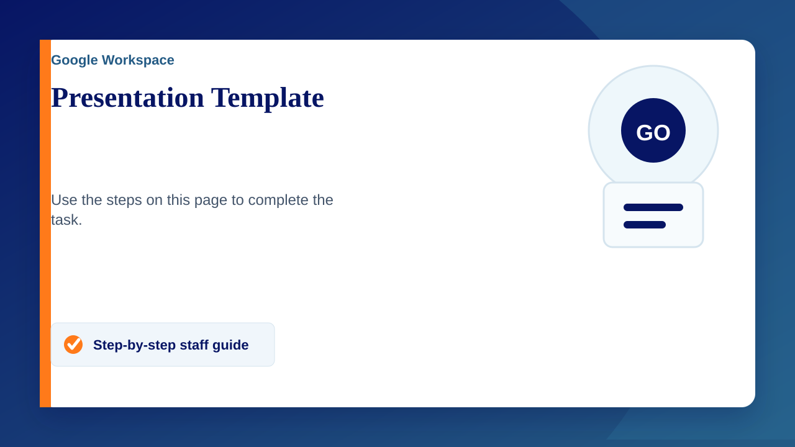
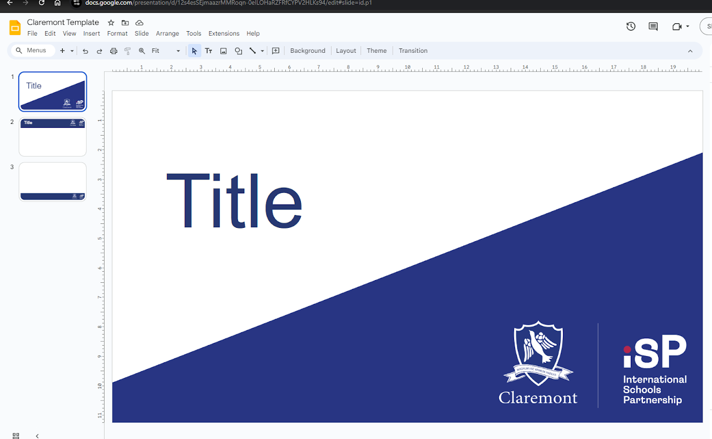
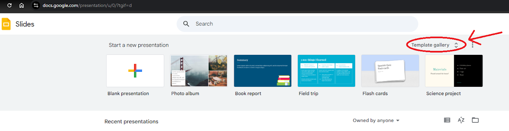
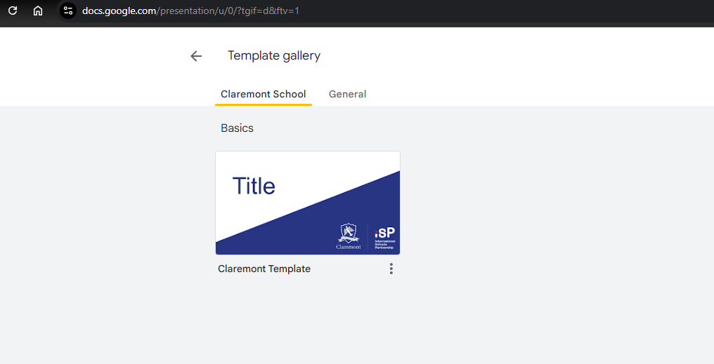

Finding the template
- Navigate to Slides ( https://docs.Google.com/presentation )
- When starting a new document click on 'Template gallery' in the top right corner
- You will now see the template in the 'Claremont School' section
- Selecting this will open the template ready to use


